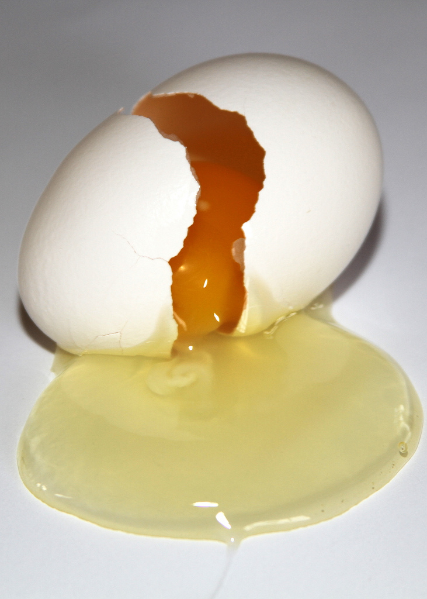
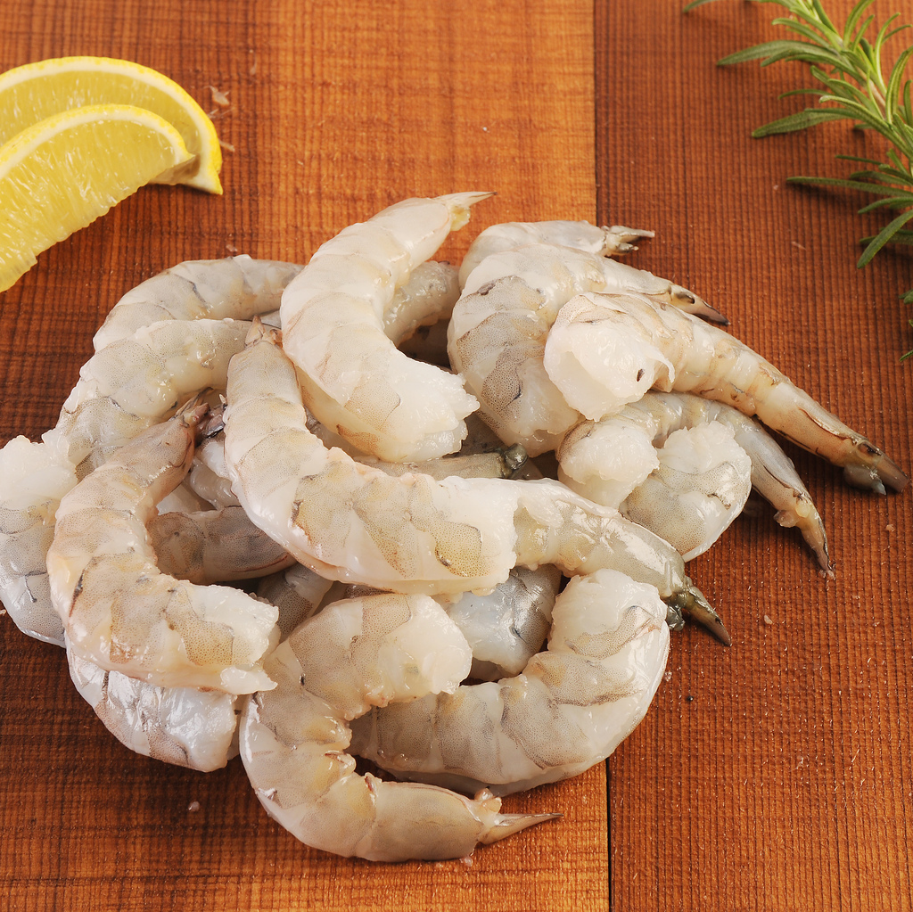
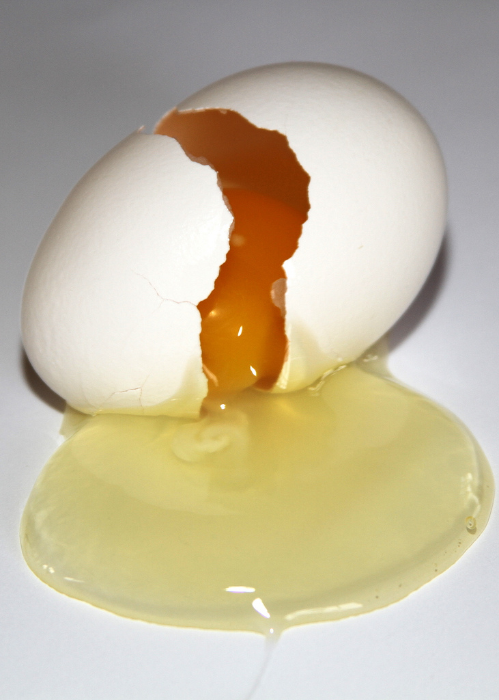
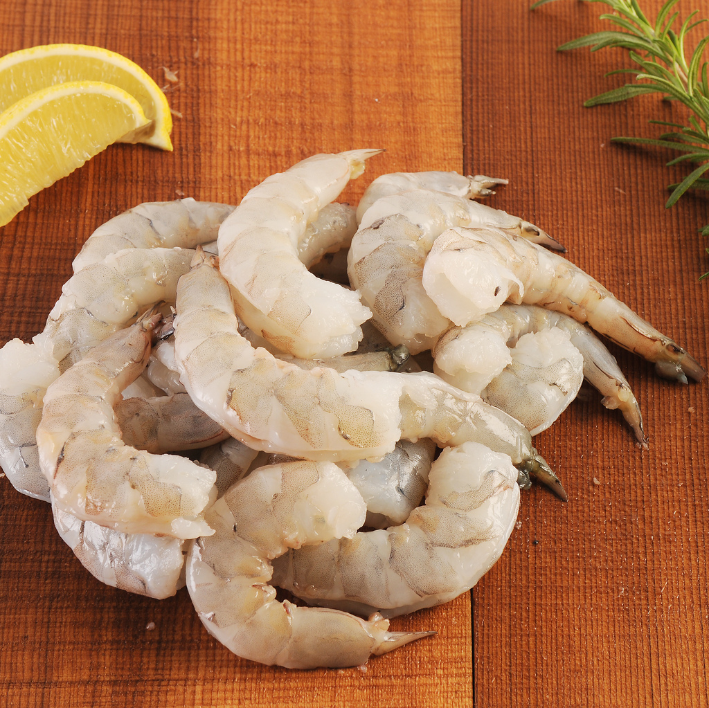

| Steps | Instructions | Images |
|---|---|---|
| 1 | Add 50ml vegetable oil to a medium heat pan. And heat the oil for 1 minute in pan. |
|
| 2 | Add the liquid egg into the heated oil, and then fry the egg quikly then cut it into small pieces by turner. |
 |
| 3 | Add the raw shrimp and fry with the egg, until the color of shrimp turn to gold. |
 |
| 4 | Add the green beans. |
|
| 5 | Add the steamed rice. |
|
| 6 | Add salt or chilli powder. And cook one more minute then enjoy. |
|